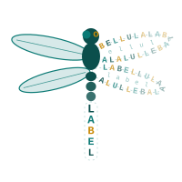

Caricamento…
Scegli la cartella: Labellula descrive tutte le foto che contiene, sottocartelle comprese, e scrive le schede in _txt accanto alle foto. Le foto già descritte vengono saltate. I nomi delle cartelle (date, luoghi, eventi) aiutano molto il modello.
_txt
Archivio della ricerca:
Non hai una scheda video adatta, o hai un archivio molto grande? Con un codice a crediti le foto vengono descritte dalla GPU di Labellula, fuori dal tuo PC: ogni foto descritta scala un credito. Ricerca, schede e foto restano sul tuo PC.
Se hai una GPU con almeno 12 GB puoi fare tutto gratis sul tuo PC: vedi Aiuto › Tre modi di usare Labellula.
Gli incassi sostengono l'associazione culturale comPVter e il museo ctrlalt.museum.
Labellula guarda ogni foto con un modello di intelligenza artificiale e scrive una scheda in italiano: titolo, descrizione, scritte leggibili, luogo e data (con la fonte), occasione, persone, parole chiave. Le schede sono file di testo in una cartella _txt accanto alle foto: restano tue e si leggono con qualsiasi programma. Poi puoi cercare in tutto l'archivio per parole o per significato.
Per descrivere le foto su questo PC serve una scheda video con circa 12 GB di memoria. Senza, la ricerca funziona lo stesso, ma la descrizione è troppo lenta: usa l'elaborazione remota, che sostiene ctrlalt.museum.
2024-02-04 gara karate Torino
config.yaml
luoghi_noti
Puoi aprire la ricerca da telefono, tablet o altri computer collegati alla stessa rete Wi-Fi, con una password. Da questo computer la password non serve.
/ cerca · ? aiuto · ← → foto precedente e successiva · Esc chiude
In locale nessuna foto lascia il PC e la pagina risponde solo a questo computer. Il riconoscimento dei volti, se attivo, resta sempre locale. Le ultime ricerche sono salvate solo in questo browser.
Labellula, di Dino Baldi · GitHub · software libero AGPL-3.0 · per ctrlalt.museum e l'associazione comPVter